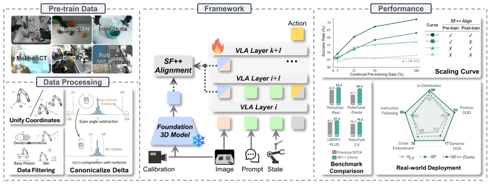
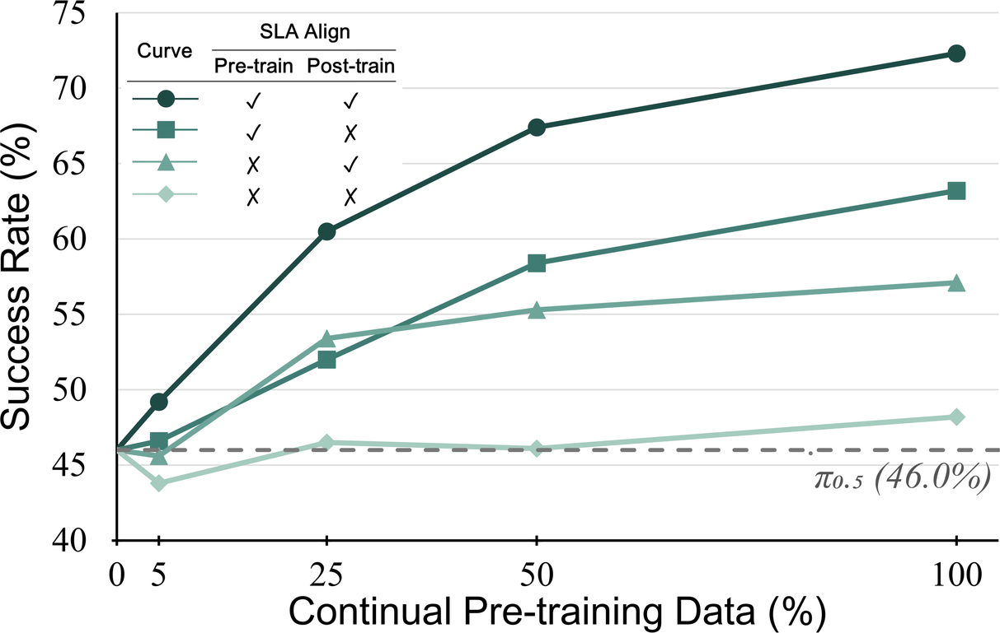

Research project Spatial-language-action model
SLA: Scaling Spatial-Language-Action
Model via Continual Pre-training
1The Hong Kong University of Science and Technology (Guangzhou) · 2OLA Dimensions
3Beijing Academy of Artificial Intelligence · 4Tsinghua University
*Equal Contribution · †Project Lead · ✉︎Corresponding Author
Contents
01 / Introduction
Spatial understanding at foundation-model scale
Reliable robotic manipulation requires not just semantic understanding but even more precise control. SLA brings spatial supervision into continual pre-training, then reinforces it during downstream post-training.

Starting from a pretrained π0.5 policy, the model aligns intermediate visual embeddings with representations from a frozen 3D perception model while learning robot actions. The external teacher and alignment modules are used during training; inference retains the original policy architecture.
02 / Training data
Learning from heterogeneous robot experience
The continual pre-training corpus combines robot demonstrations across embodiments, tasks, and scenes. A unified processing pipeline reconciles action conventions and available geometric annotations before training. The policy then adapts to each downstream benchmark through post-training.
| Data source | Episodes | Tasks | Hours |
|---|---|---|---|
| InternData-A1 | 630K | 70 | 7430 |
| AgiBotWorld-Beta | 168K | 217 | 2970 |
| RoboCasa365-Pretrain | 630K | 300 | 2090 |
| RoboCOIN | 183K | 808 | 1300 |
| DROID | 95K | 86 | 510 |
| MolmoAct | 7.9K | 23 | 30 |
| Total | 1,713.9K | 1,504 | 14,330 |
Continual pre-trainingSpatial alignment + action learning
→Task post-trainingBenchmark and real-world adaptation
→DeploymentOriginal VLA inference architecture
03 / Evaluation
Results across simulation and real robots
The paper evaluates robustness, scene generalization, downstream data efficiency, and deployment across robot embodiments. The figures below report success rates from the current manuscript.
LIBERO-Plus87.4%
Weighted success rate across seven perturbation dimensions
RoboTwin 2.072.3%
Clean2Random success rate across 50 tasks
RoboCasa-Panda68.4%
Mean success rate across 24 kitchen tasks
RoboDojo-Real33.9%
Overall success rate across three embodiments

04 / Deployment
Generalization under real-world changes
Eight deployment conditions test manipulation under human perturbations, moving targets, table-height changes, and instruction-guided handling of an unseen object. Across these conditions, SLA improves average success over π0.5 by 24.0 percentage points.
Position Generalization: Human throw fruit out, and robot picks it back up
Dynamic: Human intentionally move fruit while robot pick it
Level 1: Grasp water bottle
Level 2: Grasp watch from stationary table
Level 3: Grasp watch from dynamic table
Instruction-following: Grasp black tape
05 / Reference
Citation
The manuscript and author list are provisional. The arXiv link and final BibTeX entry will be added when available.
@misc{sla2026,
title = {SLA: Scaling Spatial-Language-Action Model via Continual Pre-training},
author = {Li, Fuhao and Song, Wenxuan and Huang, Qizhou and Zhou, Ziyang and Wang, Jingbo and E, Junwu and Wang, Pengwei and Wang, Yan and Zhou, Shunbo and Li, Haoang},
year = {2026},
note = {Manuscript in preparation}
}